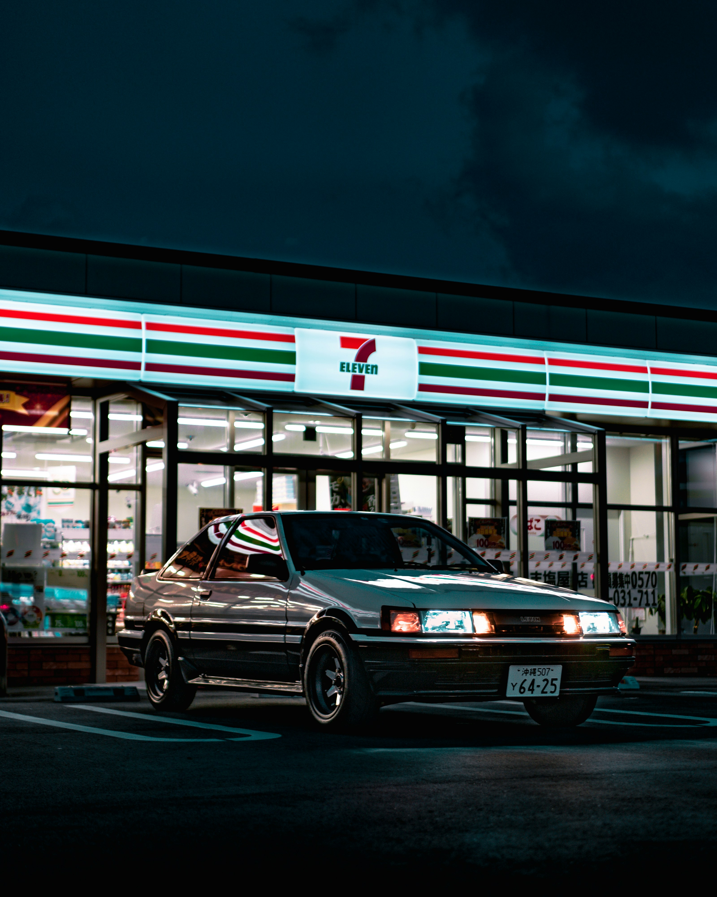
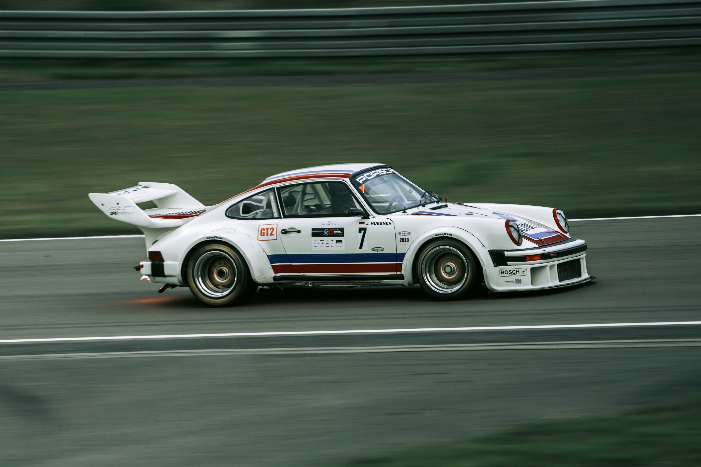
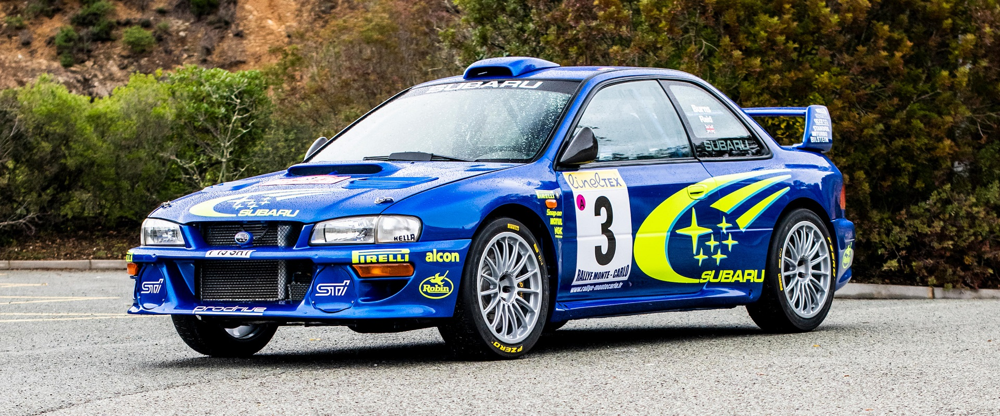

Introduccion
Coches que me gustan, inclinandose un poco hace la stetica "Rally clasica".
Toyota ae86 Trueno
La generación Toyota AE86 del Toyota Corolla Levin y Toyota Sprinter Trueno, es un pequeño cupé ligero o hatchback introducido por Toyota en 1983 como parte de la quinta generación del Toyota Corolla. También es conocido como "Hachi-Roku (ハチロク?)", por 8 y 6 en japonés, gracias al manga y anime "頭文字D/ Initial D". Para el propósito de la brevedad, el código privilegiado del chasis "AE86" muestra el modelo de tracción trasera (RWD) de 1600 cc de la gama. En el clásico código de Toyota, la "A" representa el motor que llegó en el coche de la serie 4A-GE, mientras que la "E" representa el Corolla, "8" representa la quinta generación (serie E80) y "6" representa la variación dentro de esta generación, ya que algunos han pensado que el "86" representaba el año 1986 como su año de fabricación.

Porsche 911 carrera rs 1973
El Porsche 911 Carrera RS 2.7 de 1973 fue un icono deportivo creado para la homologación en competición, siendo el coche alemán más rápido de su época. Destaca por su diseño, el primer alerón trasero ("cola de pato") en un Porsche de serie, y una construcción ligera de 960 kg. Fue un rotundo éxito de ventas, ya que Porsche amplió la producción de 500 unidades a 1.580 para satisfacer la demanda, y su concepto de coche ligero y de altas prestaciones se convirtió en el ADN de futuros modelos RS y GT.

Subaru Impreza wrc
El Subaru Impreza WRC es un vehículo de rally basado en el Subaru Impreza con homologación World Rally Car. Fue usado principalmente por el equipo oficial de Subaru en el Campeonato Mundial de Rally y por equipos privados, tanto en el mundial como en otras competiciones. Hizo su debut en 1997 y participó en el mundial hasta 2008.
Fue construido por la empresa inglesa Prodrive, quienes ya habían preparado los modelos de la marca japonesa para competir en el mundial, como el Legacy RS (1990 - 1993) y el Impreza 555 (1993 - 1996), pero bajo regulaciones del Grupo A. El Impreza WRC ha tenido 12 evoluciones, ha conseguido 35 victorias y tres títulos: dos de pilotos (Burns 2001, Solberg 2003) y uno de constructores (1997).
